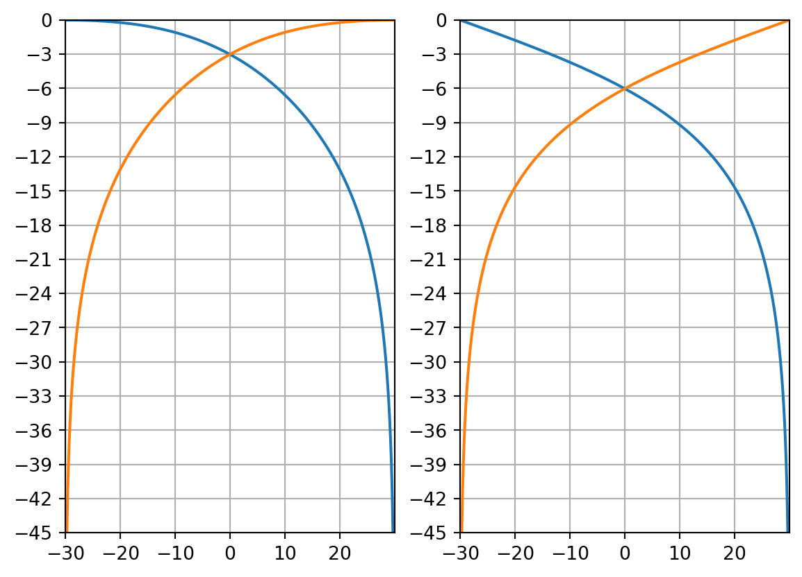
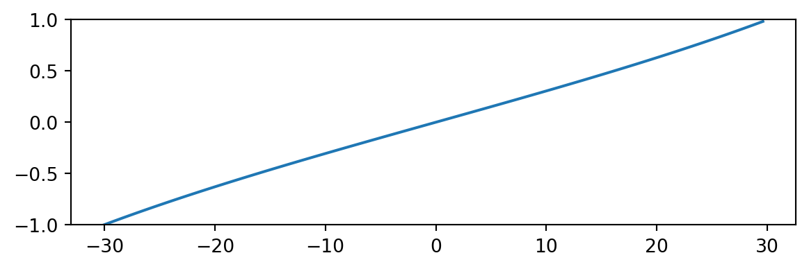
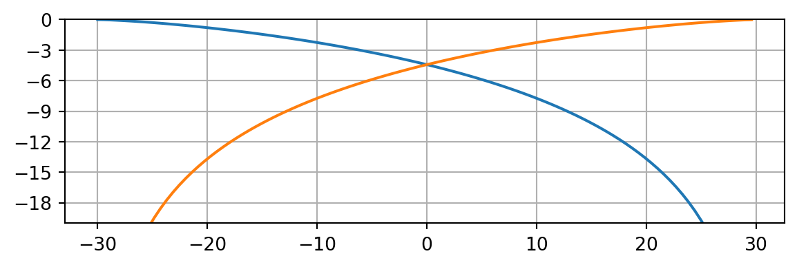
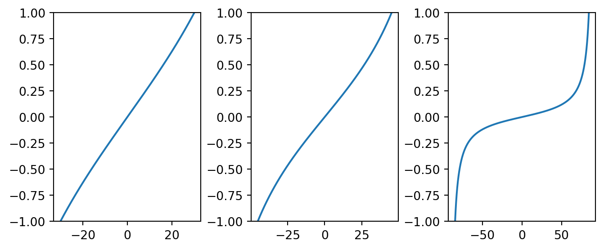
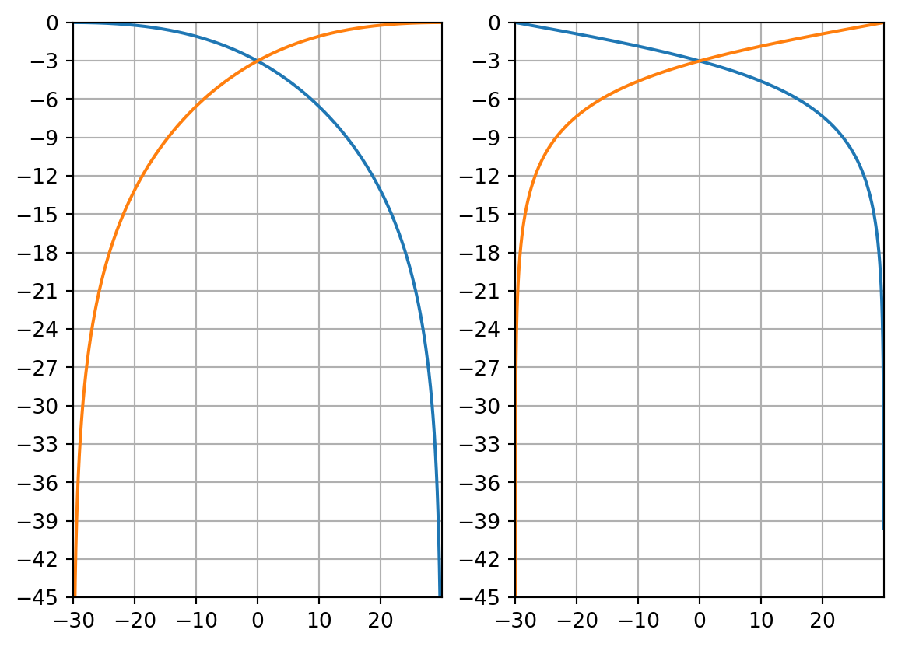
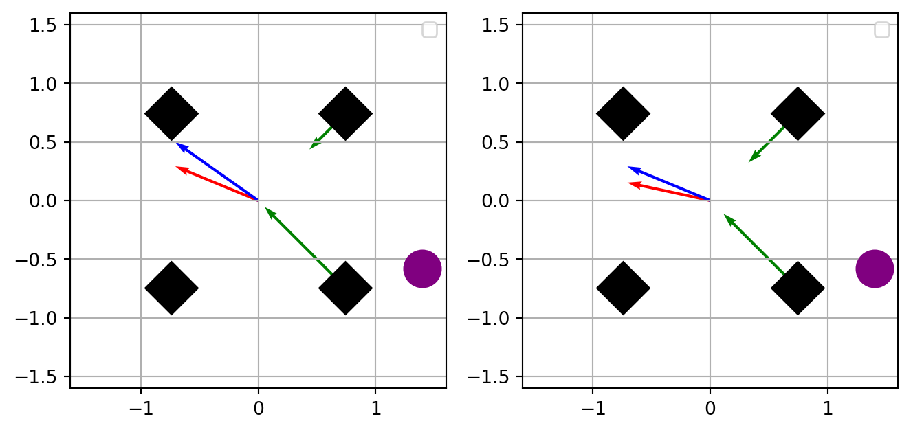

36 Mixage orienté canal
On parle de mixage orienté canal, ou d’orienté canal tout court, lorsqu’un ensemble de canaux audio représente directement un arrangement de haut-parleurs. Par exemple, un mixage stéréophonique produit deux canaux, un pour l’enceinte gauche et un autre pour l’enceinte droite. De façon analogue, une prise de son 5.0 est conçue pour que chacune des capsules du dispositif soit affectée à une enceinte précise. Cette approche orientée canal est au final la façon la plus courante, et semble-t-il la plus naturelle, de penser la spatialisation sonore. Elle est également impérative à une certaine étape du chemin du signal. Par exemple, pour un mixage ambisonique, il sera nécessaire de le décoder vers un flux audio orienté canal afin de pouvoir écouter le rendu sonore.
Lors d’un mixage orienté canal, on utilise une loi de panoramique pour répartir l’énergie d’une source sonore sur les différents haut-parleurs. Il existe alors deux grandes approches : l’approche perceptive, adaptée à des dispositifs de reproduction centrés sur un point d’écoute idéal (systèmes subjectifs); et l’approche matricielle, particulièrement efficace pour des systèmes maillés multicouches (reproduction objective).
36.1 L’approche perceptive
Les stratégies de panoramique perceptives portent ce nom car elles reposent toutes sur un principe très fort, celui du centre fantôme. Illustrons ce sujet pour une simple stéréophonie. Lorsque nous utilisons un panneur stéréo pour placer une source au milieu de la scène sonore, le signal est au final diffusé en même temps et au même niveau sur les deux enceintes. En supposant que les enceintes soient appairées, on a alors la sensation, l’impression que le son émane du centre des enceintes. Ce phénomène perceptif permet alors de créer toute une scène sonore large de soixante degrés en stéréophonie.
Ce centre fantôme est cependant assez fragile. En effet, sa crédibilité dépend fortement de l’angle formé par le triangle enceintes-auditeur. Si celui-ci est tout à fait convaincant en stéréo (60°), lorsque l’on passe à un écart de quatre-vingt-dix degrés entre les enceintes, alors cette illusion ne fonctionne plus vraiment et la cohérence de la scène sonore s’effondre.
Astuce
Quand on a le choix du nombre et du placement des enceintes d’un système, on préfère souvent ne pas dépasser cet écart de soixante degrés entre les enceintes afin de preserver la cohérence de l’espace sonore.
On retrouve ici toute la difficulté de certains systèmes, comme le 5.1 et ses dérivés, à reproduire une spatialisation cohérente, cela du à certains écarts d’angles entre enceintes bien trop importants.
36.1.1 Le panoramique stéréophonique
Le “panpot” stéréophonique permet de déplacer un son de l’enceinte gauche à l’enceinte droite. Dans ses positions extrêmes, le signal n’est que dans l’enceinte gauche ou que dans l’enceinte droite. Il est important de bien saisir le fonctionnement de cette loi de panoramique, car les extensions multicanales en découlent.
Pour qualifier cette loi, on cherche donc les variables \(g_L\) et \(g_R\), respectivement les gains de restitution de l’enceinte gauche et droite. Puisque nous cherchons deux inconnus, il nous faut alors deux équations. Nous allons donc définir une relation entre \(g_L\) et \(g_R\) en fonction de la valeur du panoramique (ici, l’angle d’incidence de la source virtuelle \(\phi\)), et une loi de conservation entre ces deux variables (selon la puissance ou selon l’énergie).
\[ \left\{\begin{array}{@{}l@{}} \displaystyle \sqrt{3}\tan(\phi) = \frac{g_L-g_R}{g_L+g_R} \\ \\ g_L^2+g_R^2 = 1 \\ \end{array}\right.\,. \]

Ici, \(\phi\) correspond à la position du potentiomètre de panoramique, tel que \(-30° \leq \phi \leq 30°\). On retrouve alors nos 60° de liberté (ou \(\frac{\pi}{3}\) radians). Aussi, la deuxième expression \(g_L^2 + g_R^2 = 1\) impose une énergie constante au système. Cela signifie donc que, lorsque notre potentiomètre de panoramique est positionné au centre, le gain de chacune des enceintes est égal et atténué de trois décibels. En résolvant le système, nous trouvons pour \(g_L\) et \(g_R\):
\[ \left\{\begin{array}{@{}l@{}} \displaystyle g_L = \frac{\sqrt{2}}{{2}}\frac{1+\sqrt{3}\tan(\phi)}{\sqrt{1+\sqrt{3}\tan(\phi)^2}}\\ \\ \displaystyle g_L = \frac{\sqrt{2}}{{2}}\frac{1-\sqrt{3}\tan(\phi)}{\sqrt{1+\sqrt{3}\tan(\phi)^2}}\\ \end{array}\right.\,. \]
Si l’on souhaite maintenant conserver la puissance du système (panoramique avec une atténuation de six décibels au centre), on pose alors le système suivant:
\[ \left\{\begin{array}{@{}l@{}} \displaystyle\sqrt{3}\tan(\phi) = \frac{g_L-g_R}{g_L+g_R} \\ \\ g_L+g_R = 1 \\ \end{array}\right.\,. \]
\[ \left\{\begin{array}{@{}l@{}} \displaystyle g_L = \frac{1}{{2}}(1+\sqrt{3}\tan(\phi))\\ \\ \displaystyle g_R = \frac{1}{{2}}(1-\sqrt{3}\tan(\phi))\\ \end{array}\right.\,. \]
Dessinons alors \(g_L\) et \(g_R\), selon les deux lois précédentes.
En guise de dernier exemple, nous pourrions aussi tracer la loi de panoramique tel que l’atténuation au centre soit de quatre décibels cinq. Pour ce faire, nous allons à nouveau modifier la loi de conservation. On pose alors:
\[g_L^\eta+g_R^\eta=1\]
Pour trouver \(\eta\), on se place dans le cas ou \(g_L\) et \(g_R\) sont égaux et valent \(10^{\frac{-4.5}{20}} \approx 0.60\). On trouve alors \(\eta=1.36\).
\[ \left\{\begin{array}{@{}l@{}} \displaystyle\sqrt{3}\tan(\phi) = \frac{g_L-g_R}{g_L+g_R} \\ \\ g_L^{1.36}+g_R^{1.36} = 1 \\ \end{array}\right.\,. \]

Le terme \(\eta\) permet donc de définir l’atténuation du système lorsque l’on positionne une source virtuelle au centre des deux enceintes. Lorsque \(\eta\) vaut \(2\), alors on conserve l’énergie, et l’atténuation au centre vaut \(3 dB\). Si \(\eta\) vaut \(1\), alors on conserve l’amplitude, et l’atténuation au centre vaut \(6 dB\).
36.1.2 Généralisation du pan d’un signal sur deux enceintes.
Continuons l’étude d’un pan pour deux enceintes, mais tâchons de généraliser son fonctionnement. Dorénavant, nous ne voulons plus seulement nous attacher au cas de la stéréophonie, mais nous souhaitons pouvoir adapter notre stratégie pour des paires d’enceintes formant un angle avec l’auditeur quelconque.
Il convient donc d’abandonner le terme \(\sqrt{3}\tan{\phi}\) pour \(\frac{\tan(\phi)}{\tan(\phi_0)}\). Ici, \(\phi_0\) correspond à la moitié de l’angle entre les enceintes, donc 30° (ou \(\frac{\pi}{6}\) radians) pour la stéréophonie. \(\phi\) correspond toujours à la position du potentiomètre de panoramique, mais dont ses bornes sont \(-\phi_0 \leq \phi \leq \phi_0\). On retrouve alors nos 60° de liberté (ou \(\frac{\pi}{3}\) radians) dans le cas de la stéréophonie.

Nous voulons aussi manipuler l’évolution du gain de chaque haut-parleur. Pour cela, nous pouvons écrire:
\[ \frac{\tan(\phi)}{\tan(\phi_0)} = \frac{g_L^{\gamma}-g_R^{\gamma}}{g_L^{\gamma}+g_R^{\gamma}} \]
lorsque \(\gamma\) vaut un, alors nous retrouvons les conditions traitées ci-dessus. Pour alléger l’écriture, on définit la fonction \(q\), qui pour tout \(\phi\) vaut \(q(\phi)=\frac{\tan(\phi)}{\tan(\phi_0)}\). En rassemblant l’ensemble de ces conditions, cela donne :
\[ \left\{\begin{array}{@{}l@{}} \displaystyle q(\phi) = \frac{g_L^{\gamma}-g_R^{\gamma}}{g_L^{\gamma}+g_R^{\gamma}} \\ \\ \displaystyle g_L^{\eta}+g_R^{\eta} = 1 \\ \end{array}\right.\,. \]
\[ \left\{\begin{array}{@{}l@{}} \displaystyle g_L^\eta = \frac{(1+q(\phi))^\frac{\eta}{\gamma}}{(1-q(\phi))^\frac{\eta}{\gamma}+(1+q(\phi))^\frac{\eta}{\gamma}}\\ \\ \displaystyle g_R^\eta = \frac{(1-q(\phi))^\frac{\eta}{\gamma}}{(1-q(\phi))^\frac{\eta}{\gamma}+(1+q(\phi))^\frac{\eta}{\gamma}}\\ \end{array}\right.\,. \]
Important
On rappelle que le terme \(\eta\) permet de définir l’atténuation du système lorsqu’on place un source virtuelle entre ses deux enceintes.
Nous pouvons maintenant étudier l’influence du terme \(\gamma\). Pour simplifier la conversation, nous nous replaçons dans les conditions de la stéréophonie avec conservation de l’énergie (\(\phi_0 = 60°\) et \(\eta = 2\)).

On remarque, entre les deux courbes ci-dessus, une différence d’évolution des gains des deux enceintes. À gauche, nous appliquons un panoramique d’amplitude, à droite un panoramique d’intensité. Cela se concrétise par une zone de contribution commune des deux haut-parleurs plus faibles dans le cas de la panoramique d’amplitude.

Lorsque le terme \(\gamma\) augmente (typiquement égal à deux), on maximise la norme du vecteur énergie \(r_E\). Cela signifie que la zone du panoramique ou les deux enceintes participent à la restitution du signal de façon significative est réduite. On considère également que la localisation des fréquences aiguës (supérieurs à 700 Hz) est améliorée.
36.1.3 le VBAP
Le VBAP (pour Vector Based Amplitude Panning) apparait pour la première dans le papier Virtual Sound Source Positioning Using Vector Base Amplitude Panning publié en 1997 à journal de l’AES par Ville Pulkki.